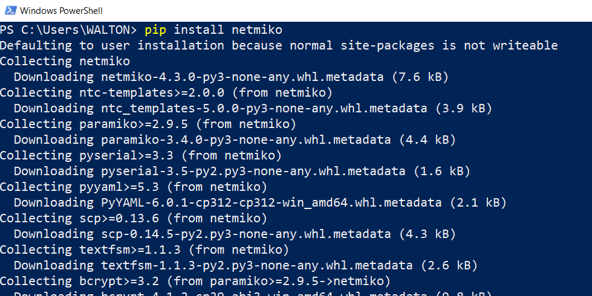
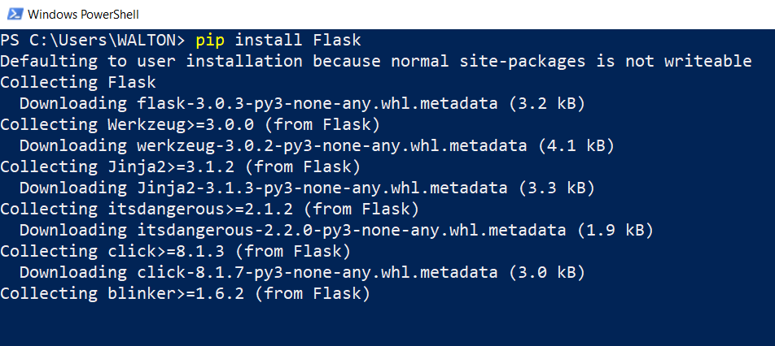
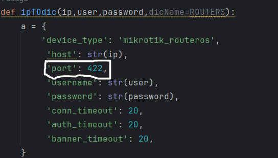
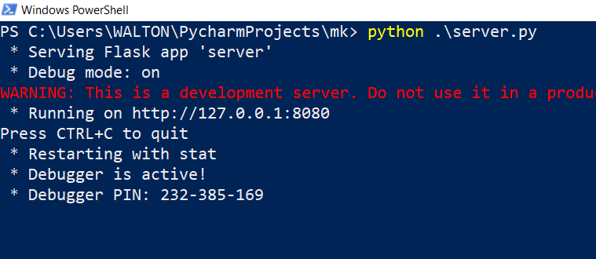
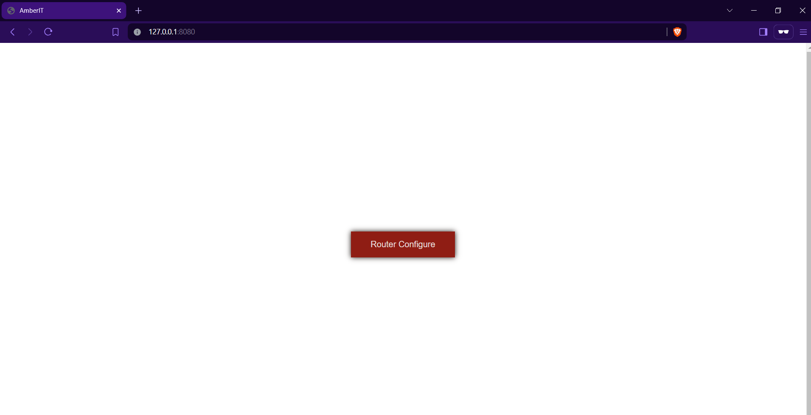
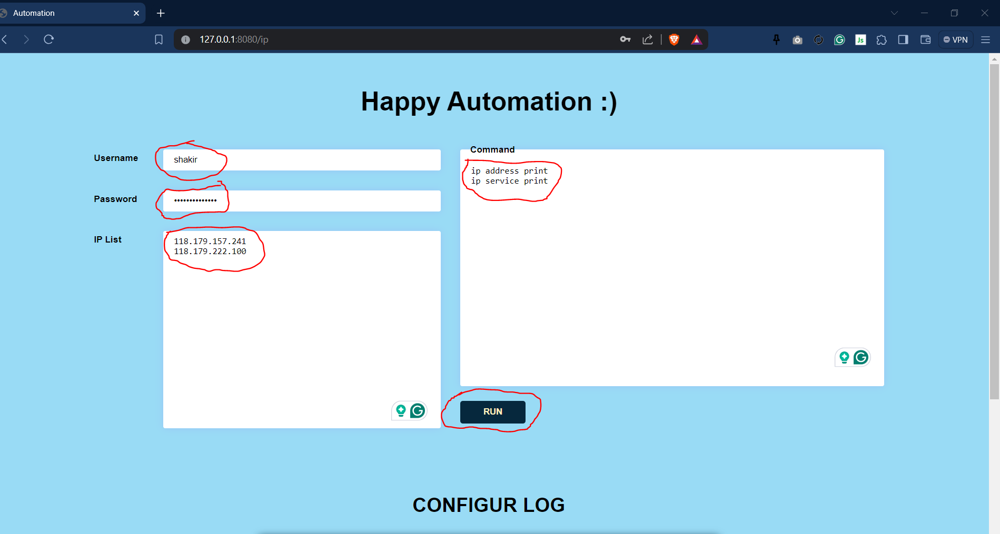
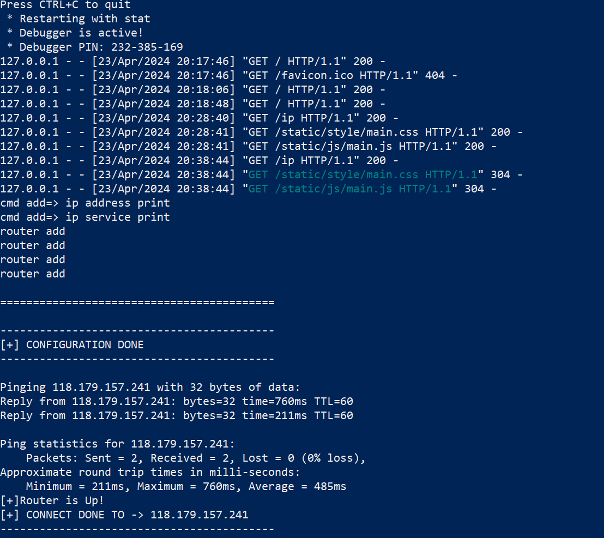
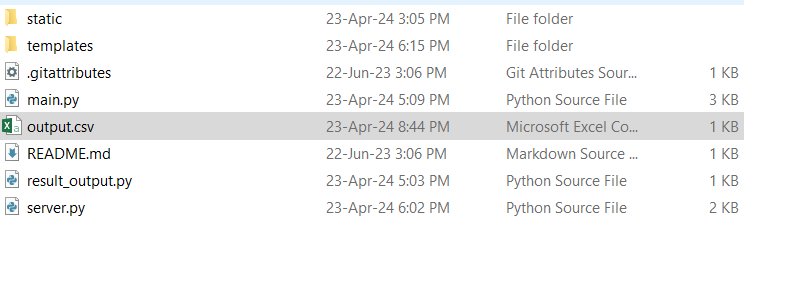
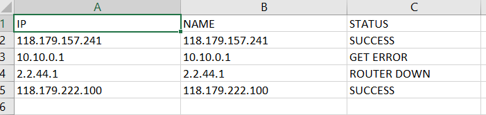

Feature
- It can change or update all router by one click
- Easy to use
- Easy to setup
Install process
- Install python on your system
-
Install Netmiko
- Open cmd, powershell or terminal
- Type [ pip install netmiko ]
- 
- Press Enter
-
Install Flask
- Open cmd, powershell or terminal
- Type [ pip install Flask ]
- 
- Press Enter
SETUP & USE
- Set SSH Port
- Open Mikrotik_Automation folder
- Open main.py on any text editor
- Set ssh port number
- 
- To run this program open cmd/terminal from Mikrotik_Automation folder
- Type [ python server.py ] and press enter
- 
- Now open you browser and type [ http://127.0.0.1:8080/ ]
- Click on the Router Configure button
- 
-
Fill all input area
- Set Mikrotik username on Username input area
- Set Mikrotik password on Password input area
- Set Mikrotik IP list on IP List input area. Like,
192.168.0.1
192.168.0.2
192.168.0.3
- set Mikrotik command on Command input area. Like,
ip address print
ip service print
- 
- Now hit on run button to execute the program
- You can see the log from terminal
- 
- You will get a output file named output.csv on Mikrotik_Automation folder
- 
- 